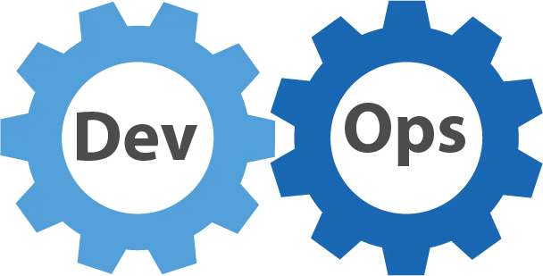
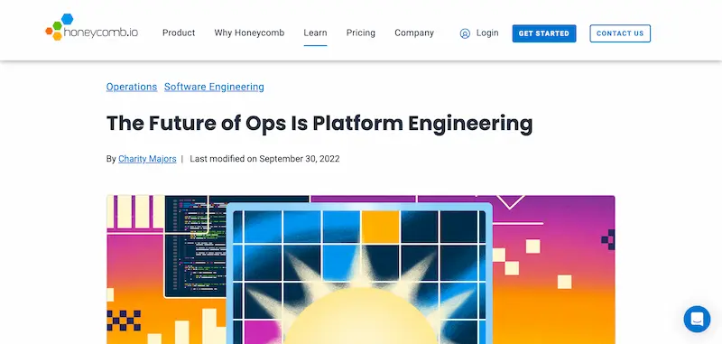
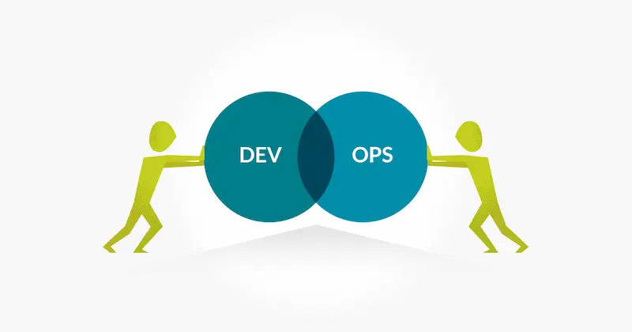

転載：运维的未来是平台工程
作者：阮一峰
インターネット企業には「運用（Ops）」と呼ばれる重要な職種があります。
“運用”の英語は Operations、略して Ops、直訳すると「操作」で、さまざまなサーバー操作を指します。
簡単に言えば、運用エンジニアはサーバーを管理し、コードの実行環境を保証する人です。
これは非常に重要な仕事であり、会社は本来非常に重視すべきですが、実際にはここ数年、運用ポジションは縮小し続け、Ops エンジニアは DevOps エンジニアへの転換を求められています。私の知る限り、多くの運用エンジニアは実際に悩んでいます。
この変化をどう捉えるべきでしょうか？運用に将来性はあるのでしょうか？今後どう発展していくのでしょうか？

最近、ある外国人の記事を読みました。タイトルは「運用の未来はプラットフォームエンジニアリング」です。
“The future of Ops is platform engineering.”

著者はこれらの問題に体系的に答え、運用は最終的に消滅し、「プラットフォームエンジニアリング（platform engineering）」という新しい職種に進化すると述べています。
彼の記事は非常に示唆に富み、私の運用に対する見方を大きくクリアにしてくれたので、皆さんにシェアします。
1. 運用の由来
最初は運用という職種はなく、プログラマーがソフトウェアの作成と運用の両方を担当していました。
しかし、ソフトウェアの作成と運用は実際には異なるスキルです。前者はコードに精通し、後者はサーバーに精通している必要があります。
インターネットソフトウェアが発展するにつれて、この2つのスキルは徐々に分業されていきました。
開発エンジニアはコードの作成、運用エンジニアはコードの実行（サーバー運用環境の保証）を担当します。
2. 運用の衰退
実際には、開発と運用の分業は大きな間違いであることが証明されました。
コードを書く人はサーバー環境を理解せず、サーバーを管理する人はコードが何をしているのか理解しない。これでは優れた製品を作るのも、問題を解決するのも難しいです。
そのため、一部の企業では開発と運用を再び統合し、ソフトウェアを作る人が運用も担当するようになりました。
これが DevOps の由来で、Dev（開発）+ Ops（運用）です。

一方、インターネット企業のコア資産と競争力は、運用ではなくコードにあります。したがって、会社はより多くのリソースを開発に投入し、専任の運用チームを徐々に縮小し、できるだけ多くのインフラを外部委託することを望んでいます。
この2つの要因により、運用は独立した職種として徐々に消えつつあります。
3. DevOps の課題
しかし、DevOps は実際には運用を置き換えることはできません。
ますます複雑化するビジネスにより、システムやインフラも複雑化し、かつ安定性・信頼性が求められます。
普通の開発エンジニアには到底無理です。すべてのインフラを理解しているわけでもなく、プロの運用レベルのシステム管理能力もありません。
このような場合、企業は外部委託を選択し、外部のクラウドサービスを購入し、インフラを専門のクラウドサービスプロバイダーに外注し、コストを最大限に圧縮します。
4. 運用の役割
運用はサーバー管理が主な仕事ですが、さらに2つの役割に分けられます：インフラの構築 + 実行環境の管理。
「インフラの構築」とは、ハードウェアの調達・設置・ラックマウント・ネットワーク接続などの作業です。
「実行環境の管理」とは、業務ソフトウェアの運用を保証することです。
DevOps の登場後、「インフラの構築」は徐々に消え、クラウドサービスの調達に変わり、「実行環境の管理」は DevOps エンジニアに引き継がれました。
すると新たな問題が生じます：誰がクラウドサービスの調達と統合を担当するのか？
5. プラットフォームエンジニアリングとは
適切なクラウドサービスの調達は簡単なことではありません。
クラウドサービスは多種多様で、API・SDK・ツールも多く、経験豊富な運用エンジニアでも簡単には説明できません。
そのため、専任者が正しい判断を下し、ニーズを満たすクラウドサービスを選定し、ツールを作成してすべてのクラウドサービスを統合し、業務開発者が利用できるようにする必要があります。
この役割がプラットフォームエンジニアであり、クラウドサービスの評価・調達・統合を担当し、自社のインフラとして構築し、外部クラウドサービスの上に自社プラットフォームを作り、開発エンジニアがその上でセルフサービスでコードを本番投入できるようにします。
上記の定義にはいくつかのポイントがあります。
（1）インフラは外部委託され、コストと開発期間の最小化を目指します。
（2）プラットフォームエンジニアは外部委託されたインフラを統合し、プラットフォームを構築します。
（3）開発エンジニアはそのプラットフォーム上で自分で実行環境を構築・管理し、コードを実行します。
6. プラットフォームエンジニアリングと運用の違い
プラットフォームエンジニアリングと運用にはいくつかの顕著な違いがあります。
（1）プラットフォームエンジニアはソフトウェア開発が必要で、テストやコードレビューも行い、チームの運営は開発チームに似ており、プロダクトマネージャーやデザイナー、フロントエンドエンジニアもいる場合があります。
運用は通常アプリケーションソフトウェアを開発せず、多くても自動化スクリプトを書く程度です。
以前は、あるエンジニアがコードを書き、別のエンジニアがコードを実行していました。今後はすべてのエンジニアがコードを書き、自分のコードを実行します。開発エンジニア、DevOps エンジニア、プラットフォームエンジニアの違いは、レイヤーや機能ごとの役割分担だけです。
（2）プラットフォームエンジニアリングはクラウドネイティブで、すべての作業がクラウド上で行われます。
運用はクラウドネイティブではなく、ハードウェアを自分で管理し、クラウドをサポートするだけです。
（3）プラットフォームエンジニアはクラウドサービスを調達し、運用はハードウェアを調達します。
7. 運用エンジニアの進路
従来の運用職が消えるにつれ、現役の運用エンジニアは必然的に転身を迫られ、選択肢は3つあります。
（1）業務ソフトウェアの開発が好きなら、DevOps エンジニアになる。
（2）プラットフォームソフトウェアの開発が好きなら、プラットフォームエンジニアになり、インフラ統合に専念する。
（3）ハードウェアや基盤が好きなら、「インフラストラクチャ・アズ・ア・サービス（IaaS）」のクラウド企業に入り、インフラの研究に専念する。
（完）